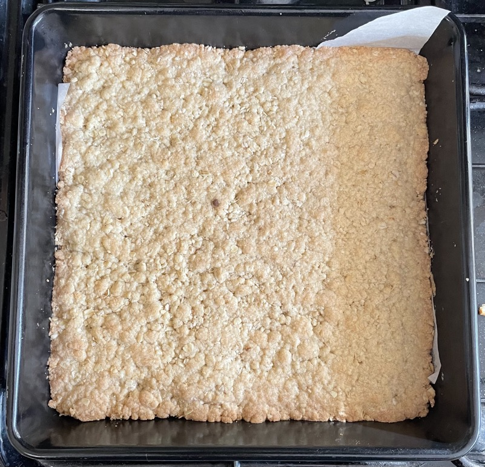
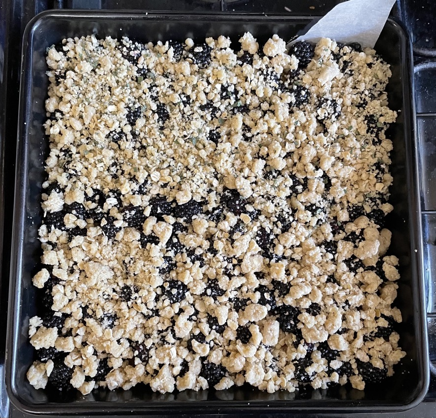
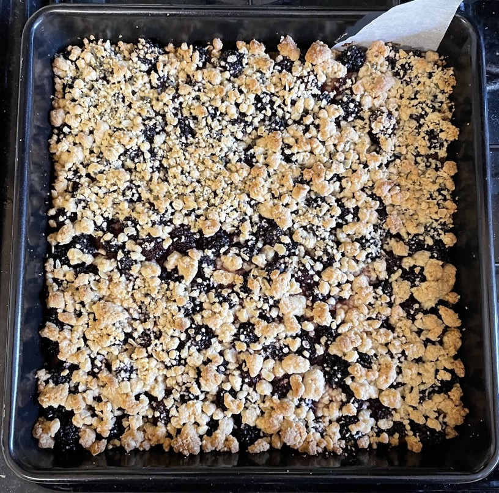

Blackberry crumble bars
Crumble base
- Mix in big silver bowl
- 300g plain flour
- 70g caster sugar
- 50g light brown sugar
- 60g oats
- Add and rub until like course breadcrumbs
- 220 salted butter cold and chopped into small cubes
- Set aside ¼ (175g) of crumble
- Tip the remaining ¾ of crumble into 20x20cm baking tin and press down (can line with paper)
- Chill both for 20 mins
- Bake base for 20 mins at 180°C until set
- Leave to cool
Fruit bars
- Mix in bowl
- 350-450g blackberries
- 45g caster sugar
- 1 tsp cornflour
- juice of ½ lemon
- Pour fruit and liquid over cooled base
- Top fruit with remaining ¼ of crumble and press down
- Bake for 40 mins at 190°C
- Leave to cool for 2 hours
- Cut into portions, 4s then 4s
Serving
- 12 or 16 portions
- Calories = 3700, 1/12 = 307, 1/16 = 230
Notes
- Oven takes 10 mins to heat to 190°C
- Careful do not overbake the base
- Could add walnuts / hazelnuts / more oats to topping
- Original recipe
- Made: 14 Apr 2023, 7 Nov 2022 with 50g blueberries, 6 Sep 2022
Pics


